86 strata townhomes on roughly 10 acres beside Osoyoos Lake — two pools, two hot tubs, a clubhouse and fitness centre, a private beach and marina, and lawns between the buildings.
Solé Vita is a gated, tile-roofed townhome community built in 2006. Per BC Assessment the townhomes are two storeys with 3 bedrooms, 3 bathrooms and an attached garage, about 1,370–1,590 sq ft. Listings describe it as a lock-and-leave option for full-time residents, second-home owners and rental use.
Fees, pet rules and rental rules come from listing data — confirm them in the strata documents before you buy.
Solé Vita sits at 7200 Cottonwood Drive, a gated community of 86 townhomes. MLS® listings describe it as a low-density complex of roughly 10 acres — listings say "almost 10", "over 10" and "nearly 11" — with manicured lawns, a volleyball court, and homes spread out rather than packed together. Per listings, residents share two outdoor pools, two hot tubs, a clubhouse with a fitness centre and recreation room, a private beach and dock, and a private marina.
The townhomes are two storeys with 3 bedrooms, 3 bathrooms and an attached garage (BC Assessment). Listings mention granite counters, 9-foot ceilings with crown moulding, central air, and in some units lake or mountain views. Several listings highlight that the strata handles the grounds, which suits lock-and-leave owners.
Pat's note: the complex wraps around a small inlet off the lake, which gives many homes water or reflection views beyond the main shoreline. This is a firsthand observation, not a listing or assessment fact.
Boat slips are not automatic: listings say a slip can be purchased separately, and one 2026 sale included a slip with a solar-powered lift. If a boat matters to you, confirm exactly what is included before you write an offer.
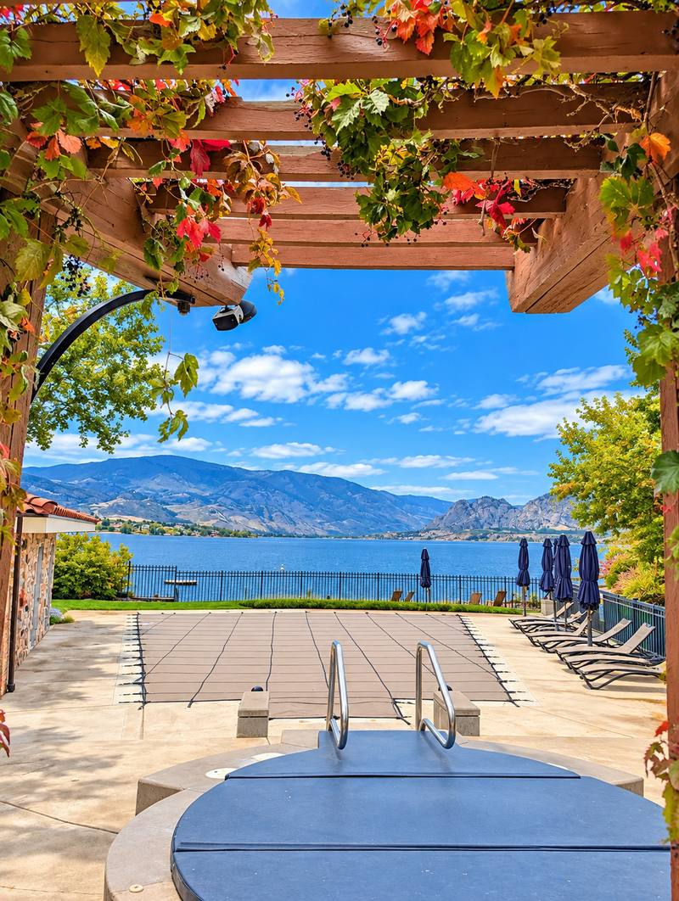
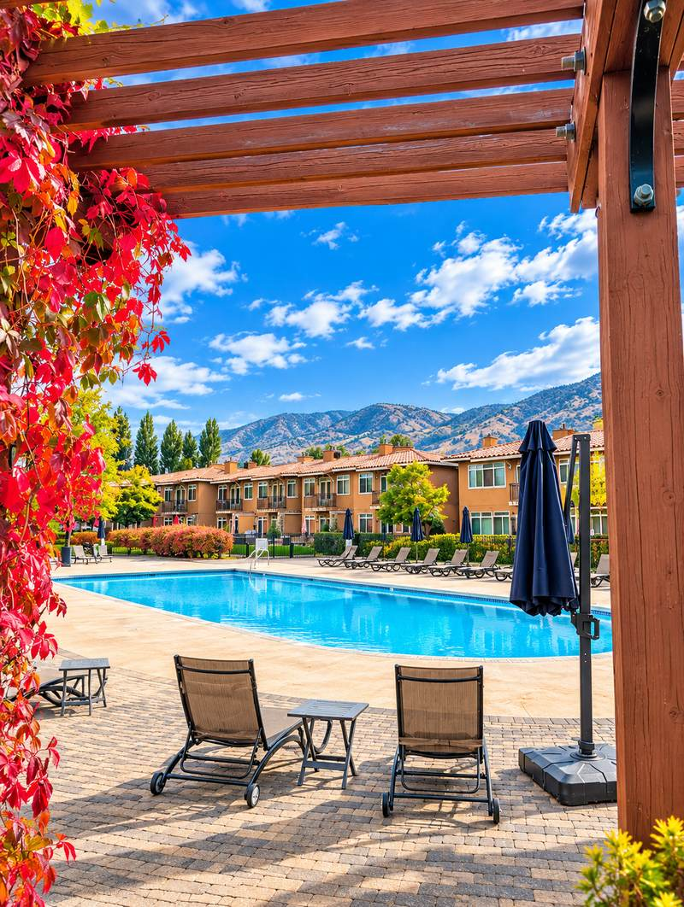
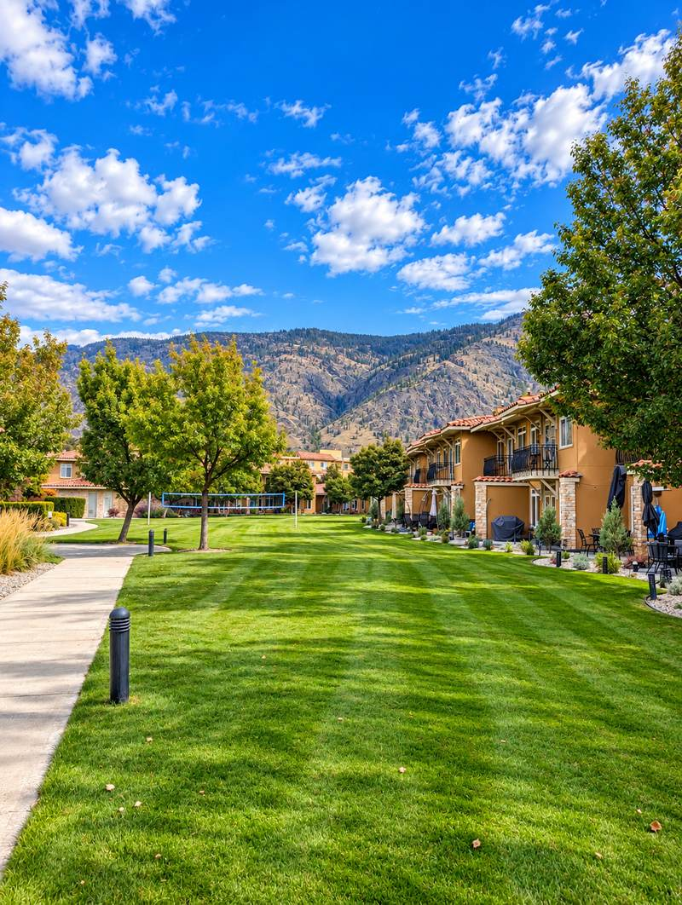
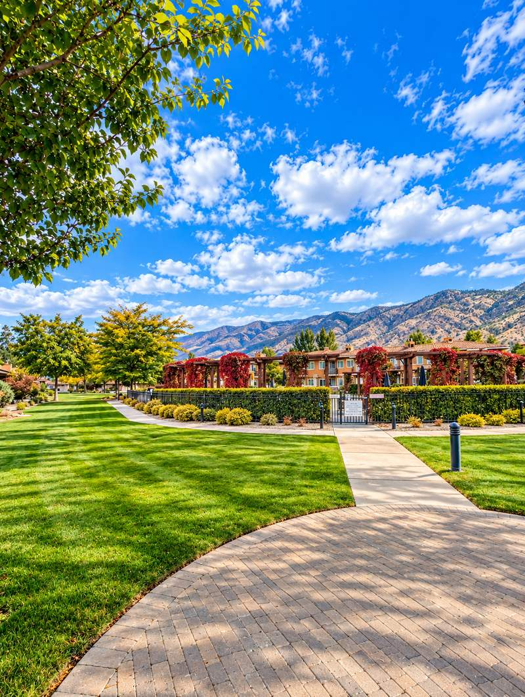
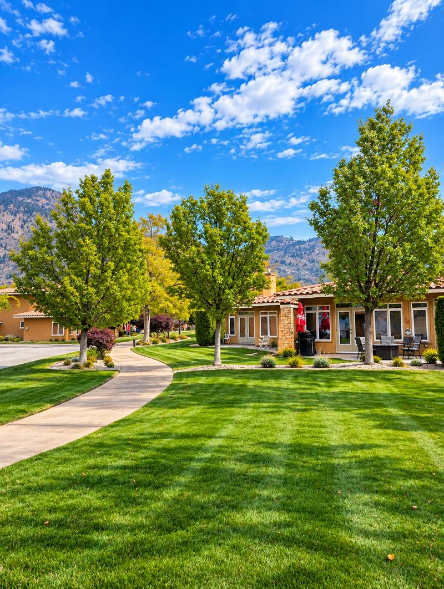
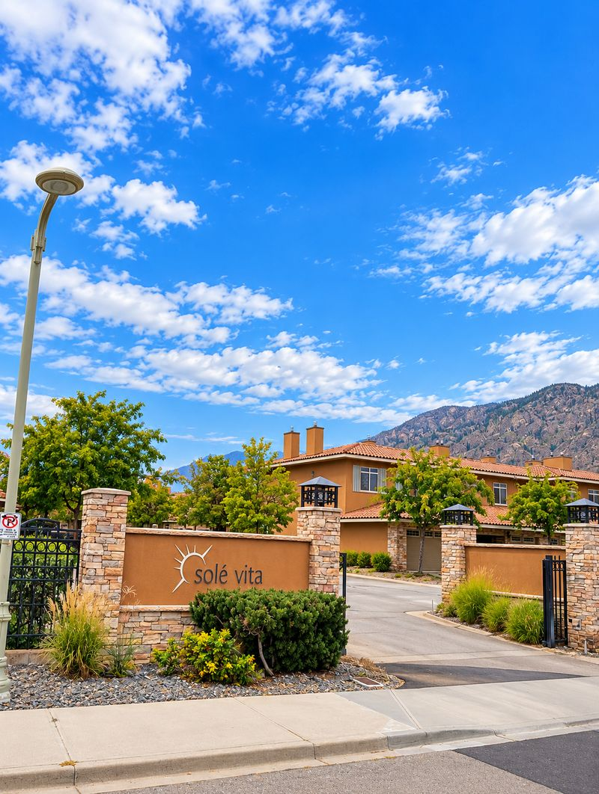
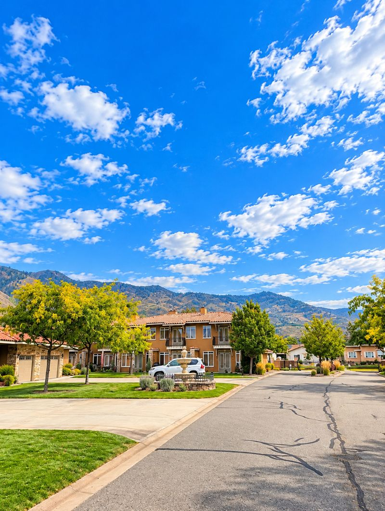
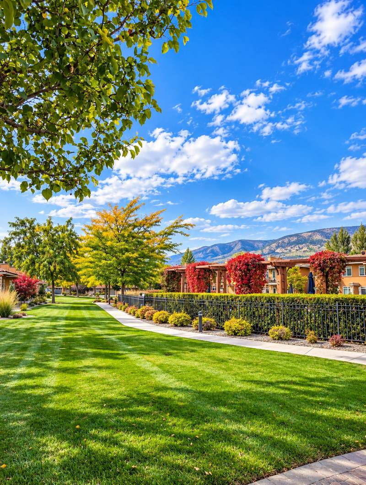
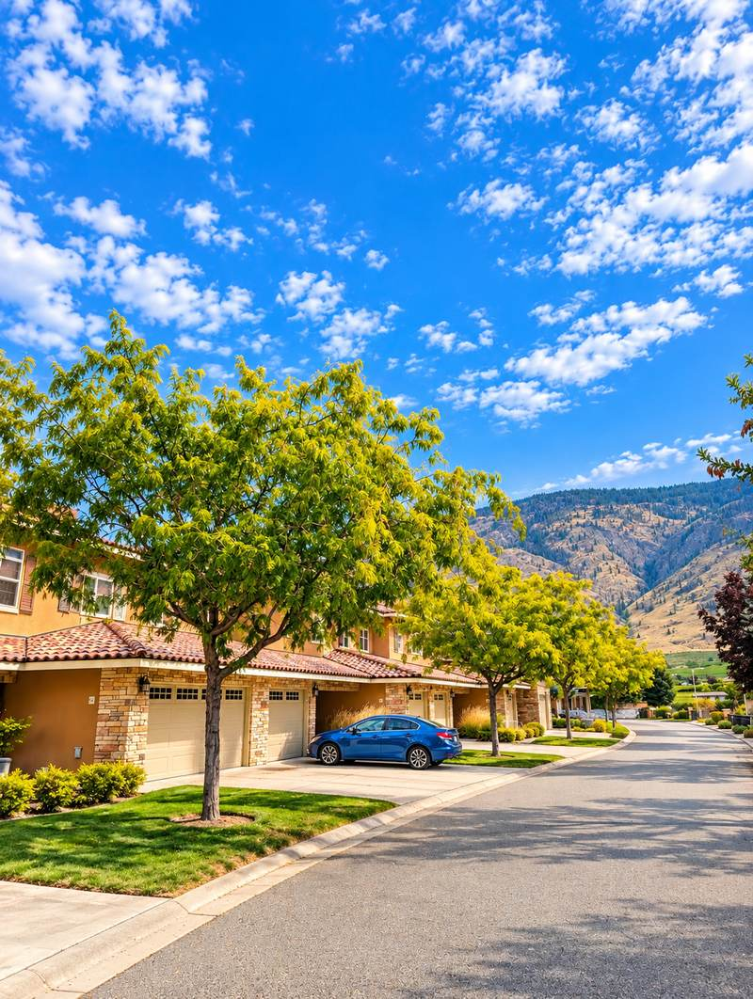
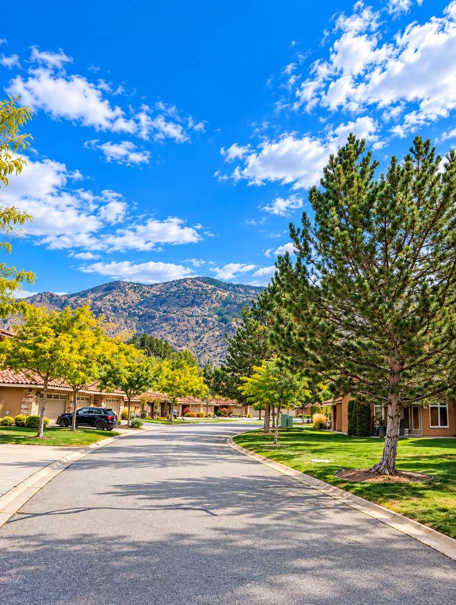
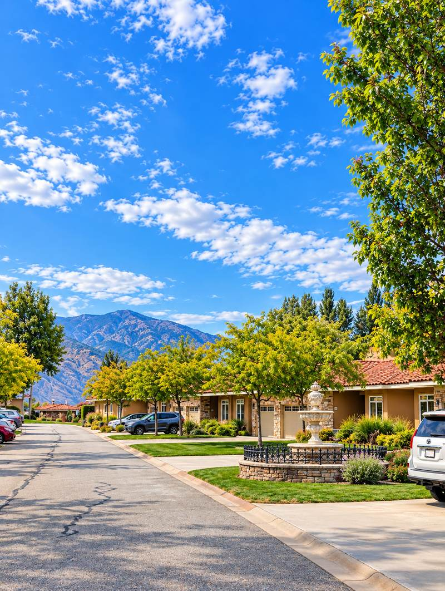
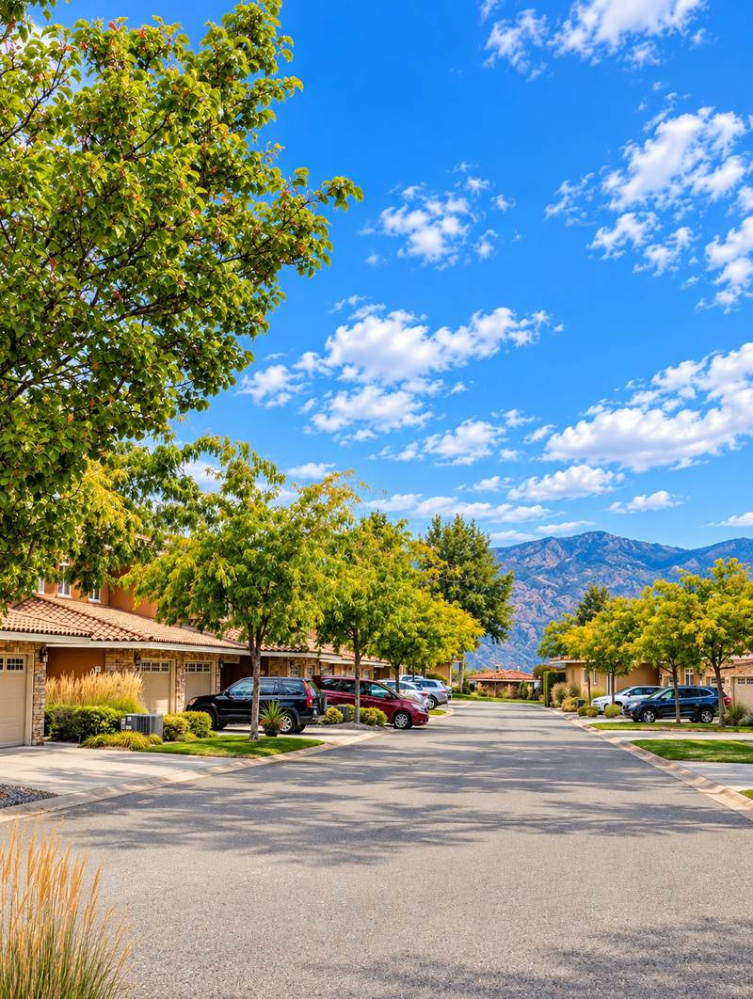
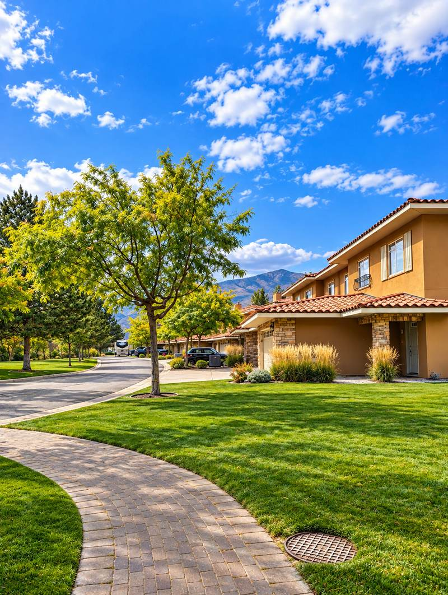
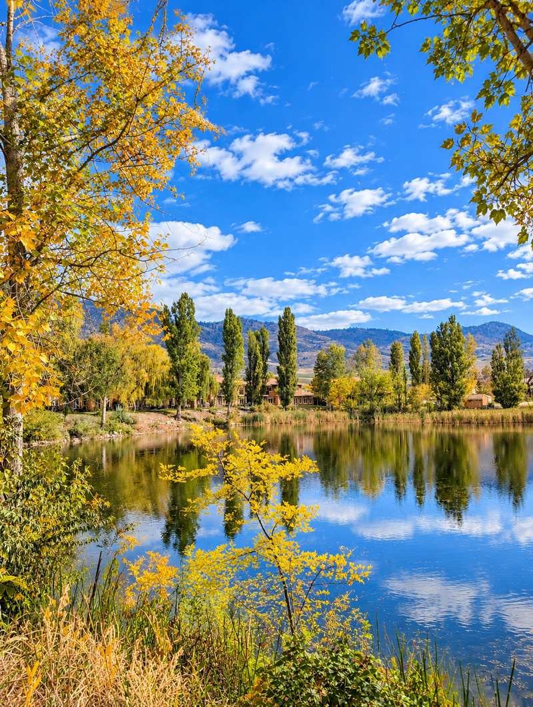
Photos: Pat Miazga.
As of 2024, deferring a depreciation report by vote is no longer allowed — South Okanagan strata corporations (including bare land strata) have until July 1, 2027 to be compliant. See the full guide →
Review bylaws, minutes, depreciation report and reserve fund status — standard due diligence for any gated strata community.
Two recent listings show $493 a month. Confirm what it includes — grounds, two pools, two hot tubs, clubhouse, gate, marina — and how the reserve fund looks.
Two recent listings show "pets not allowed", and one shows rentals allowed. Confirm the current pet and rental bylaws, including any minimum stay, in the strata documents.
Built in 2006 per BC Assessment. Pat's construction background is useful for assessing envelope condition and any deferred maintenance at this age.
Pat can pull recent sold comparables here to help you understand fair value for the low-density positioning this complex offers.
Pat can compare Sole Vita's low-density model against denser lakefront strata options to help you weigh space against amenities and price.
0 active in the October 6, 2026 MLS® data
4 sold, $725,000 – $989,000
$760,000
Per MLS® listings: unit 74 sold for $989,000 in May 2026 (listed at $1,088,000, double garage); unit 75 sold for $795,000 in July 2026 (fully furnished, boat slip with solar lift); unit 56 sold for $725,000 in August 2026 (updated); unit 49 sold for $725,000 in October 2026 (1,371 sq ft). Days on market ranged from 34 to 63.
BC Assessment values for units checked were about $732,000 to $978,000 (2026 roll); two of the four sales closed below assessment. MLS® and BC Assessment show different sale dates for unit 49 (October versus August 2026). Prices vary with size, view, garage, boat slip and updating — ask Pat for comparables on any specific unit.
Per MLS®, four townhomes sold between May and October 2026 for $725,000 to $989,000, with a median of $760,000. None were listed as of October 6, 2026.
BC Assessment shows 2006 construction, two storeys, 3 bedrooms and 3 bathrooms with a garage, about 1,370–1,590 sq ft among the units checked.
Per MLS® listings: two outdoor pools, two hot tubs, a clubhouse with a fitness centre, volleyball, a private beach and dock, and a private marina. Boat slips are bought separately.
Two recent MLS®-derived listings show $493 per month. Confirm the current fee and what it covers in the strata documents.
Listing data shows "pets not allowed" on two listings and rentals allowed on one. Bylaws change, so confirm both with the strata before buying.
Review the depreciation report, financials, bylaws and minutes, and confirm the fee, reserve fund, boat slip terms and rental and pet rules.
Low-density gated communities like this don't come up often in Osoyoos. Pat can flag current availability.
Talk to PatAll Communities →